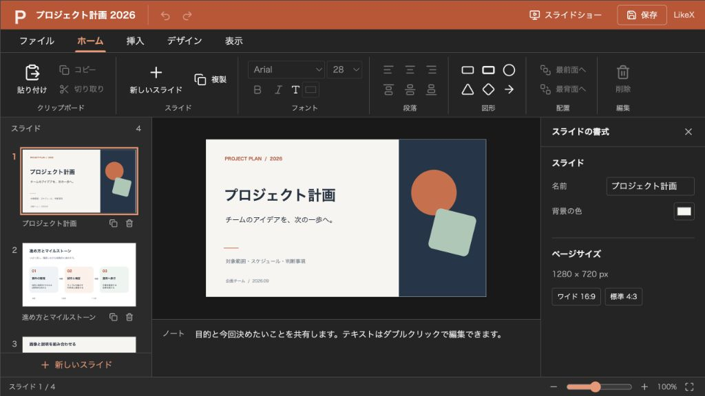
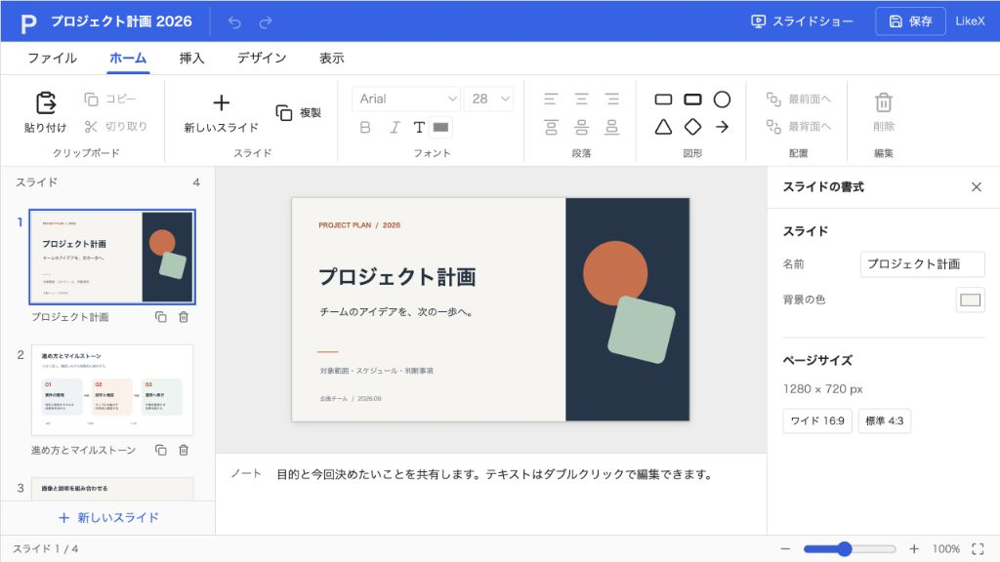

@likex/slide
導入と初期表示
パッケージとコピーでの導入、読み取り専用、表示設定。
画面例を見る ↓LikeSlideはスライドをJSONで保持するReactコンポーネントです。保存先への通信は親アプリに任せ、編集はクライアント側の下書きとして扱います。
パッケージで使う#
CoreとSlideのtarballをインストールします。npmレジストリへの公開は未実施です。
npm install ./likex-core-0.1.0.tgz ./likex-slide-0.1.0.tgz"use client";
import LikeSlide, { createSlideDeck } from "@likex/slide";
import "@likex/slide/styles.css";
const initialDeck = createSlideDeck({ title: "提案資料" });
export default function Editor() {
return <LikeSlide initialDeck={initialDeck} onSave={async deck => {
const response = await fetch("/api/deck", { method: "PUT", body: JSON.stringify(deck),
headers: { "Content-Type": "application/json" } });
if (!response.ok) throw new Error("保存できませんでした");
}} colorMode="system" style={{ height: 720 }} />;
}CSSはアプリの入口で1回importします。Next.js App Routerでは app/layout.tsx に置けます。イベントを渡す親はClient Componentにしてください。React / React DOMは19.2.6以降の19系を使用します。Tailwind CSSや専用Providerは不要です。
コピーで使う#
packages/core/src/をcomponents/core/にコピーします。packages/slide/src/をcomponents/slide/にコピーします。slide/core.tsをexport * from "../core";に変更します。slide/ooxml.tsをexport * from "../core/ooxml";に変更します。react、react-dom、lucide-reactを利用先へインストールし、components/slideとcomponents/slide/styles.cssをimportします。
LICENSE と THIRD_PARTY_NOTICES.md は両方のフォルダに残してください。
表示と編集の設定#
| プロパティ | 型 | 省略した場合 |
|---|---|---|
initialDeck | SlideDeck | 空のスライド1枚 |
onSave | (deck) => void または Promise<void / SlideDeck> | 読み取り専用 |
readOnly | boolean | onSave の有無に従う |
colorMode | "light" / "dark" / "system" | ライト |
primaryColor | string（#RGB / #RRGGBB） | オレンジ |
title | string | 資料のタイトルを利用 |
style / className | Reactの標準型 | 親側で高さを指定 |
features | SlideFeatures | 全機能有効 |
warnOnUnsavedChanges | boolean | 未保存の離脱確認を有効化 |
features のキーは addSlides、deleteSlides、reorderSlides、text、shapes、images、formatting、notes、import、export、presentation、history です。false の機能は画面から隠し、対応する操作も受け付けません。
<LikeSlide initialDeck={deck} onSave={saveDeck}
features={{ import: false, images: false }} style={{ height: 720 }} />initialDeck は初回のみ読み込みます。別の資料に切り替えるときは <LikeSlide key={documentId} ... /> とします。認証・保存先・共同編集の競合解決は親アプリの責務です。
プライマリカラー#
<LikeSlide initialDeck={deck} onSave={saveDeck}
primaryColor="#2563eb" colorMode="system" style={{ height: 720 }} />primaryColor は一番上のタイトルバー・保存ボタン・選択表示などのUI色です。文字色や選択色は読みやすさに合わせて調整します。値を変更すれば表示へ即時反映され、スライド内の文字・図形・背景の色や保存するJSONは変わりません。未指定・不正な値は既定色を使用します。style で明示したCSS変数は優先します。
編集 · 保存とイベント · コマンドとJSON · PowerPoint入出力
画面例
{kind=link}

{kind=link}
